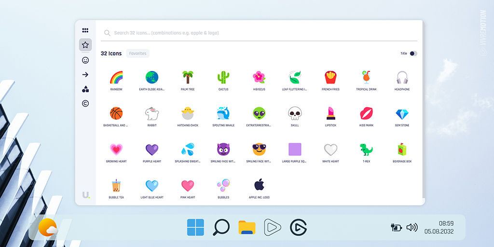
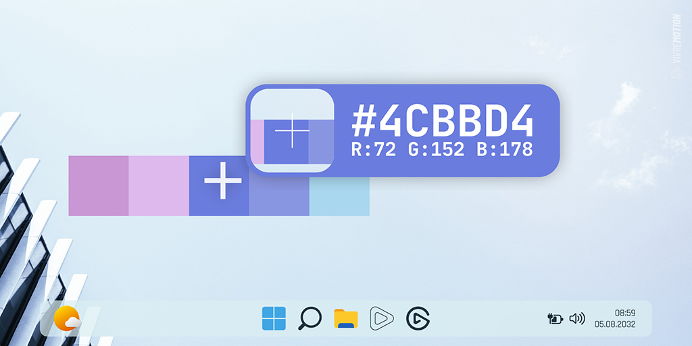

Windows Cockpit
Extend your Windows with the Windows Cockpit Plugin and get a real wingman for your productivity-with events for, for example:
━ PC Force Restart
━ Process Kill (Task-Manager)
━ Clipboard operations
━ MP3 (Tag) filename rename
━ Explorer File Lists
━ RGB/HEX Color converter
━ Network Adapter toggles
━ Text Case operations
━ Merge/Split PDF Files
━ Wake on Lan
━ Image Converter/Editor
━ Screenshots
━ Emulate Mouse Events
━ Audio Volume
━ Window Z-Index manipulations
━ Instant Google Translating
━ and many more...
Live-Streaming
Check your live stream like a professional: With native plugins for OBS, Twitch and YouTube, you control the change of scene, records, chat interactions and much more-everything directly via your Stream Deck.
Media & Sound
Play sound effects, control your music or change your voice live - all with just one push of a button. With Spotify integration and voiceemod, your stream, call or gaming evening become an experience.
Start programs
Start individual favorite programs - or several at once, with just one push of a button.
Photo Slideshow
Your personal wallpaper slide show and photo gallery always in view through the Moment's Slideshow Plugin.
GIF Animations
Bring life on your Stream Deck with the animated GIF icons from VIVRE-MOTION
Gaming Shortcuts
Program every keyboard shortcut on your Stream Deck - and choose the right icon from a thousand color variants for your favorite game.
Camera Surveillance
Keep an eye on your house entrance, the garden or your office live - directly over your Stream Deck. Thanks to the Surveillance IP Camera Plugins, you can integrate almost any RTSP camera seamlessly.
ZIP Operationen
Zip Dateien automatisch entpacken und direkt aufräumen oder automatisch zippen kein Problem mit dem ZIP-Manager Plugin.
Weather Screen
Discover the innovative weather app, which not only delivers precisely predictions, but also shows the current weather conditions in real time as a dynamic background image on your screen-day and night.
Emoji Icon Explorer
Search unicode symbols, emojis and special characters in real time and save your favorites. Super fast search - just like in the messenger on your smartphone.

Color Picker
Colors in view, exactly on the point: The Floating Color picker shows you the color under the mouse pointer-in Hex, RGB or CMYK. Perfect for creative minds with claims.

Window arrangement
Organize and move windows in pixel or percent -based - according to your workflow. Make your desktop into a cockpit: window management has never been so comfortable.
System Monitoring
All system values are shown in real time in liquid animated diagrams-similar to the performance advertisements in the Windows Task Manager. The live monitoring tool records the following system metrics: RAM, CPU and GPU utilization, network traffic, ping, memory utilization, battery level and much more.
Business Meetings
Turn your meetings and online conversations (e.g. in Microsoft Teams, Zoom, Slack or Google Meet) directly via your Stream Deck. Camera on/off, mute micro, lift hand - everything with one click. So the focus remains on the conversation - not on technology.
Mouse Events
With the mouse Jiggler (Phantom Mouse), your cursor stays in motion - ideal to avoid rest mode. So that you never lose sight of the mouse, Mouse Trail ensure a bright trace and Click Echo for visual feedback at every click.
Keyboard & Mouse
With the Stream Deck, every keyboard Shortcut can be recorded and emulated. The mouse simulator plugin helps to record complete sequences and play again, regardless of whether it is mouse or keyboard events.
Outlook Mails
New email in Outlook? Or answer directly to an email-including HTML text, appendix and contacts? With the Instant Mail plugin, this is done in a flash and automatic manner.
Presentations
Make your live training and presentations more impressive than ever: With tools such as Mouse Spotlight, Echo, Trail and Focus Mask, you will draw your full attention to your cursor-and with the presentation plugins your audience always stays with you.
Screen Zoom
Always in view where the mouse is currently-the mouse camera is chasing the cursor live and focuses at the push of a button. With the screen-dive plugin you dive directly into the desktop and see even more details-pixels for pixels.
Language translations
With the Stream Deck plugin, translate your currently selected text at lightning speed into the target language you set-and automatically add the translation back to the clipboard.
VBA Macros
Simply start Excel VBA macros with the Stream Deck or perform functions in Outlook, Word, Access and PowerPoint.
Backups
With drop zone you place floating storage space on the desktop to move or copy files or folders using drag & drop. Thanks to the date folder option, it is automatically sorted by day-perfect for structured shelves.
Google Search
Dynamic Search Island offers you a completely new, ultra-fast surf experience. Via the dynamic URL and your direct input in the Iceland Spotlight search field, the desired website will be carried out immediately with your search-quickly, focused and efficient.
System Settings
Match important system settings in a matter of seconds: airplane mode, language, dark or light theme, HDR and even the Windows night light (blue light filter)-all just one click away.
Smart-Home
With the Shelly plugin and the most extensive smart home icon pack, you control your home very intuitively. The IoT monitor shows you all the devices-from the lamp to the photovoltaic system.
Retro Feeling
Back to the 90s-with the original retro icons from Windows 3.11, 95, 98 and XP!
Standby Screensaver
With the standby screen plugin you show individual full screen status ads-on request at the same time on all monitors as you know from WhatsApp & Co.